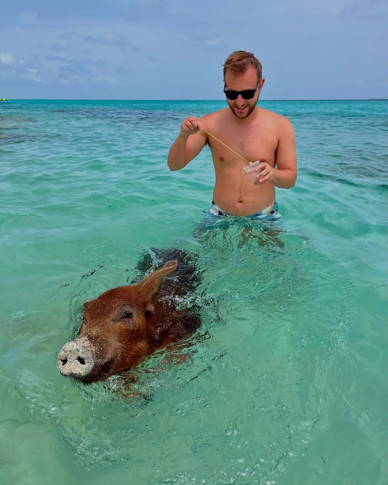

The highlight01
Swimming with the pigs
📍 The swimming-pig beaches · reached by boat from Nassau
This is the one you come for. You take a boat out to an uninhabited cay and the pigs come swimming straight out to meet you, big ones, little ones, black ones and ginger ones, bumping around your legs in the shallows for a snack. It's hilarious, a little chaotic, and honestly magical, all set in the clearest water imaginable. We'd 100% recommend doing it as a boat tour that folds in snorkelling and turtles too, so you get a whole day on the water for it.
Bring a GoProThey really do swim
GetYourGuide
We'd recommend